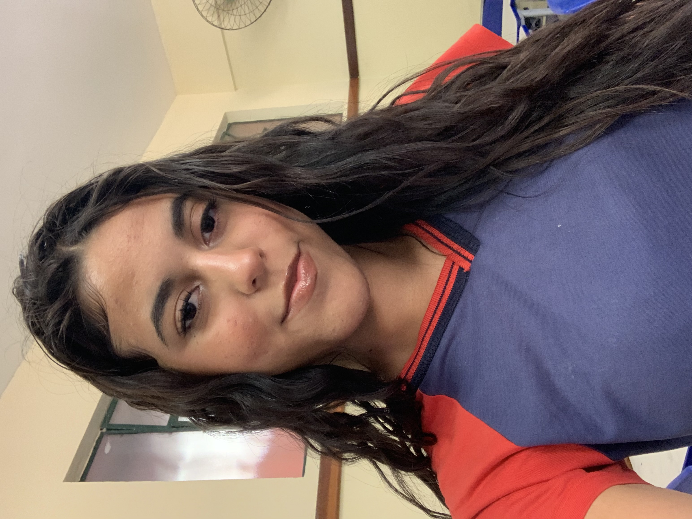

Meu primeiro site
Este site é um projeto sobre minha história, minhas experiências, minhas habilidades e um pouco sobre quem eu sou.

Por trás do sorriso de uma jovem, existia uma história que quase ninguém conhecia. Ela enfrentava desafios silenciosos, lidava com inseguranças e passava por momentos difíceis sem que os outros percebessem.
Muitas vezes se sentiu perdida e sem direção, mas, mesmo assim, nunca deixou de seguir em frente, guardando dentro de si uma força que nem ela mesma compreendia totalmente.
Ao longo do tempo, vieram as quedas, os erros e as dúvidas, mas também os recomeços. Cada dificuldade trouxe um novo aprendizado e ajudou a moldar quem ela estava se tornando.
Entrar em contatoMe chamo Amanda e minha cor favorita é azul, talvez porque ela representa calma, profundidade e um jeito tranquilo de ver o mundo — algo que combina muito comigo.
Por fora, sou como qualquer outra jovem, mas por dentro carrego pensamentos, sonhos e sentimentos que nem sempre são fáceis de explicar.
Cresci em uma família com quatro irmãos, o que significa que nunca faltaram momentos de bagunça, risadas e até alguns conflitos.
Também valorizo muito as amizades que construí ao longo dos anos, pois carrego comigo memórias e sentimentos que fizeram parte do meu crescimento.
Gosto de aprender novas receitas.
Sou uma pessoa criativa e tenho mente aberta para coisas novas.
Aprendi com a minha prima e isso me ajuda a distrair a mente.
Consigo expressar sentimentos de forma clara, principalmente em amizades e situações pessoais.
Já fiz 5 anos de balé.
Este site é um projeto sobre minha história, minhas experiências, minhas habilidades e um pouco sobre quem eu sou.
Baixe meu currículo completo em PDF:
Baixar currículo